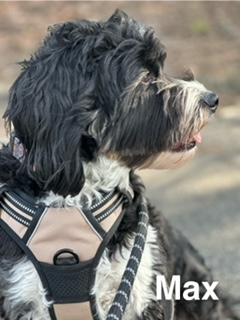
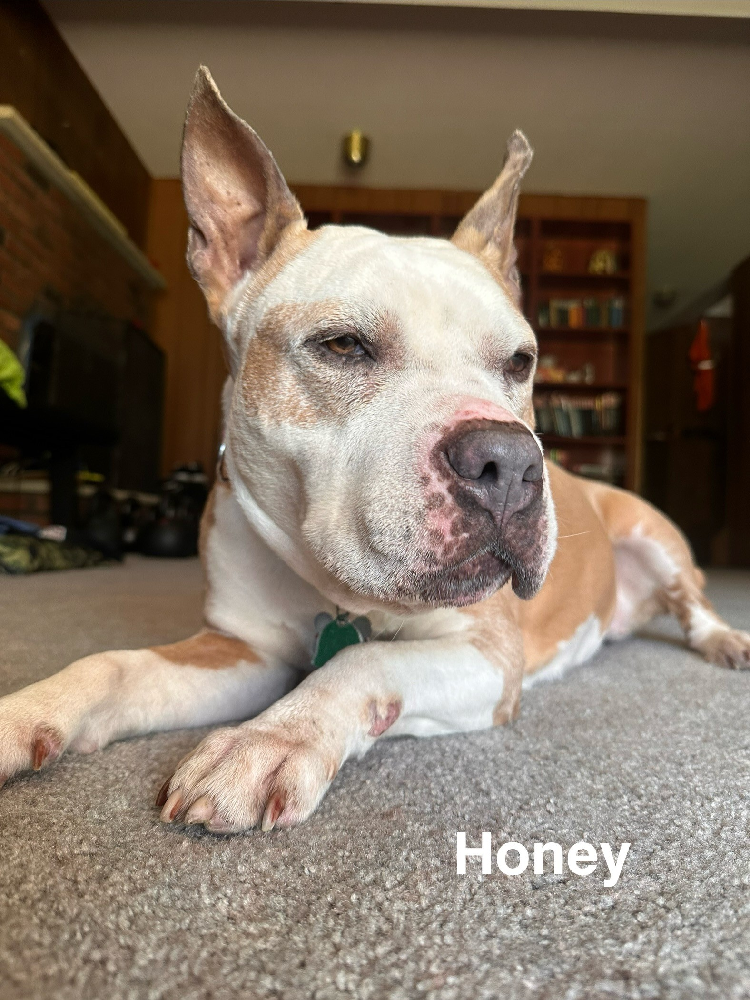

Walk With Wagz
Only The Best for your best Friend
Pet CPR & First Aid Certified
CLIENT TESTIMONIALS
Binkley and Bailey
Nikkii has been our reliable dog walker for a while.
Our dogs always get excited the moment she arrives.
Nikkii is reliable, friendly, and easy to contact. I
would recommend her to anyone; she will take great care
of your faithful fur-baby.

Juno & Trixi
Nikkii looked after Juno & Trixi at our home while we
were away on vacation. The dogs loved her and we felt
happy knowing both our pets and home were in good hands.

Misty
Misty is my rescue from Puerto Rico after Hurricane Maria. She is a little skittish. I had an
emergency & couldn't find someone to take her for Christmas. I called Walk With Wagz and Nikkii
agreed to take
her. Nikkii quickly won her over because she is a warm loving person and Misty responded to her
gentle
nature. I highly recommend Walk With Wagz.

Max
Before our trip, we sought a trustworthy and caring dog sitter for our three-year-old dog Max,
aiming for someone who could provide him with affection, attention, and engagement during our time
away.
Upon meeting Nikki for an interview, we were immediately impressed by her exceptional personality
and expertise, which reassured us amidst our concerns about leaving Max in someone else's care.
Our anxieties persisted as we departed for our vacation, and Max was equally uneasy. However, Nikki
frequently updated us with photos and texts, helping Max to adjust within a day and a half through
her patience and understanding.
She diligently took him for walks and to the park, even driving him to a local reservation for
extended outings in nature. Discovering Nikki has been a delight; she's truly invaluable.
With the strong bond formed between Nikki and Max, we eagerly anticipate planning future trips and
outings, confident in Nikki's reliable care for Max.

Honey
We have used Nikkii as our dog walker and dog-sitter, and she is absolutely amazing!!
Our dog, Honey, is about 10 years old. She is a 60-lb pit bull mix with medical needs. Nikkii first
helped us when we needed a dog walker for the mornings, and she took the best care of Honey not only
just walking her, but also ensuring that Honey had breakfast and her morning medications.
Upon returning from work, Honey (who sometimes has separation anxiety) was so relaxed that it was
evident Nikkii took the best care of her!
When we were out of town for several days, we knew Honey would prefer being at home instead of a kennel. Nikkii went above and beyond to make sure that Honey was as comfortable as possible while we were away. Nikkii spent quality time with Honey, took her on walks throughout the day, ensured that Honey had her medications in the morning and evening. Not only were we able to enjoy our vacation, but Honey also enjoyed her vacation with Nikkii! We loved getting cute pictures and updates. Nikkii is incredibly caring and professional. We highly recommend Walk With Wagz to any pet owner!
When we were out of town for several days, we knew Honey would prefer being at home instead of a kennel. Nikkii went above and beyond to make sure that Honey was as comfortable as possible while we were away. Nikkii spent quality time with Honey, took her on walks throughout the day, ensured that Honey had her medications in the morning and evening. Not only were we able to enjoy our vacation, but Honey also enjoyed her vacation with Nikkii! We loved getting cute pictures and updates. Nikkii is incredibly caring and professional. We highly recommend Walk With Wagz to any pet owner!